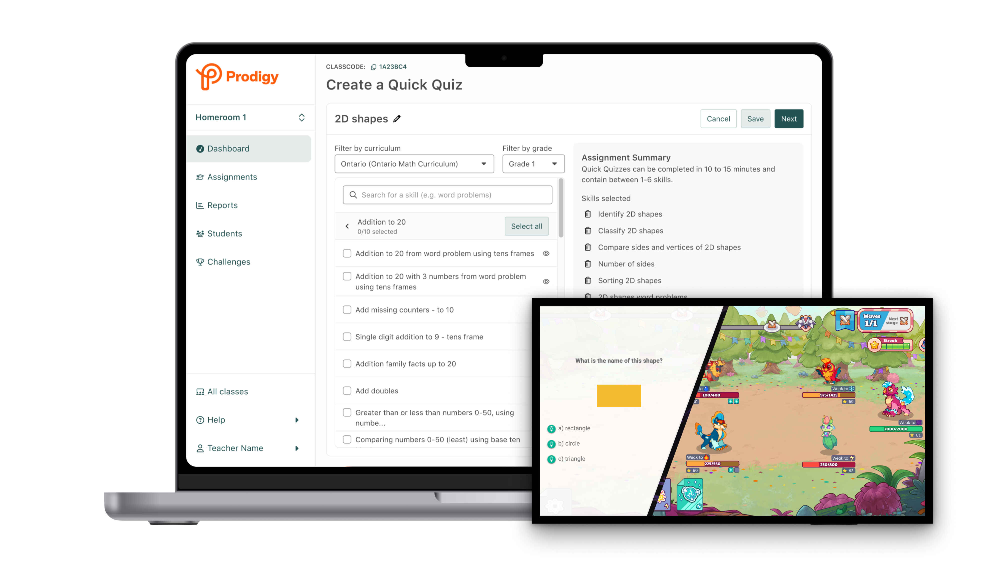
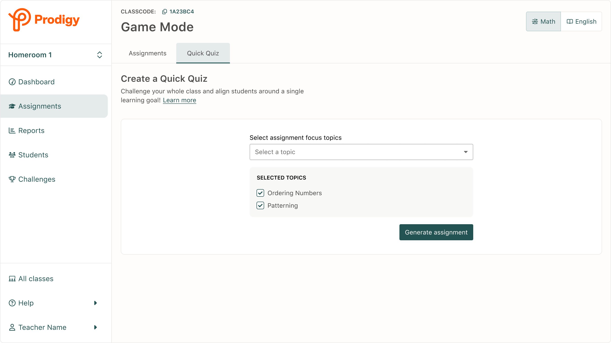
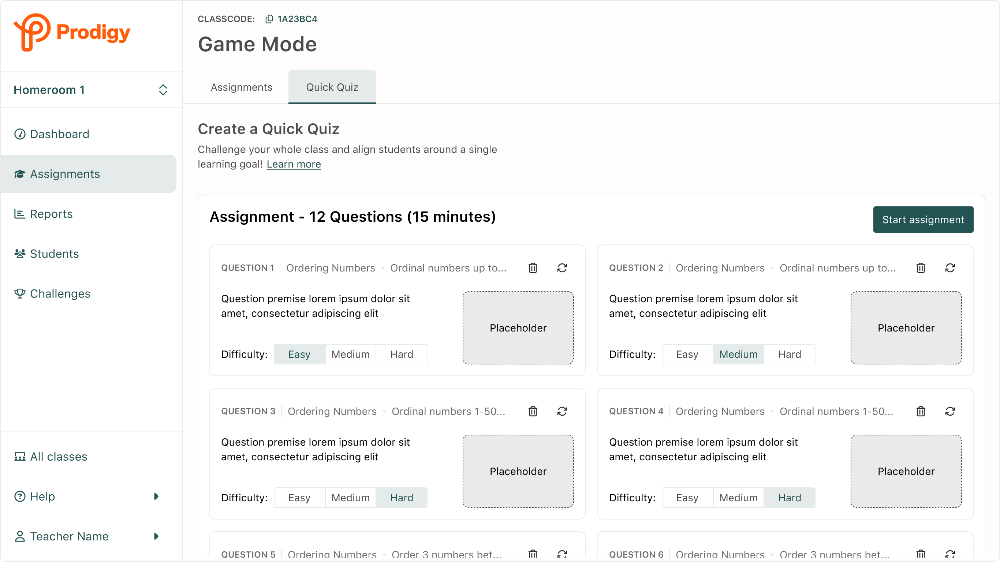
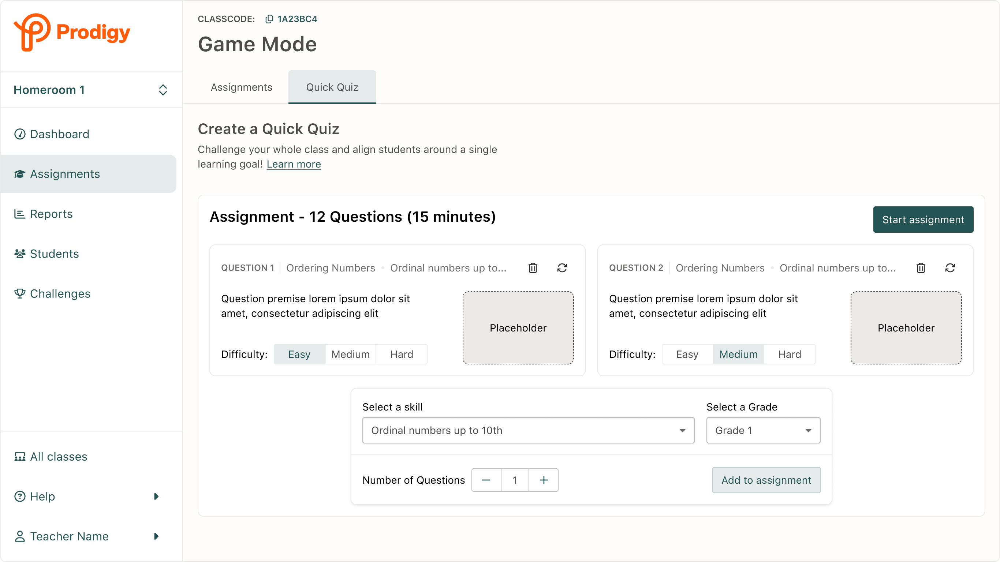
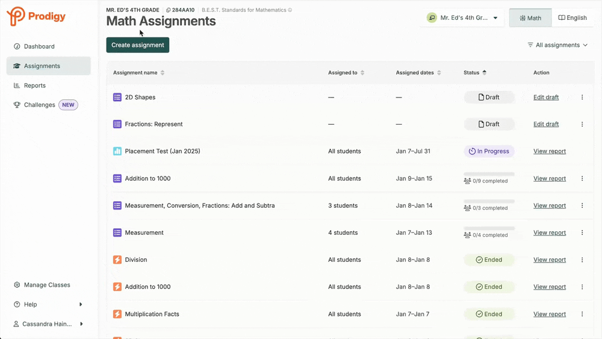
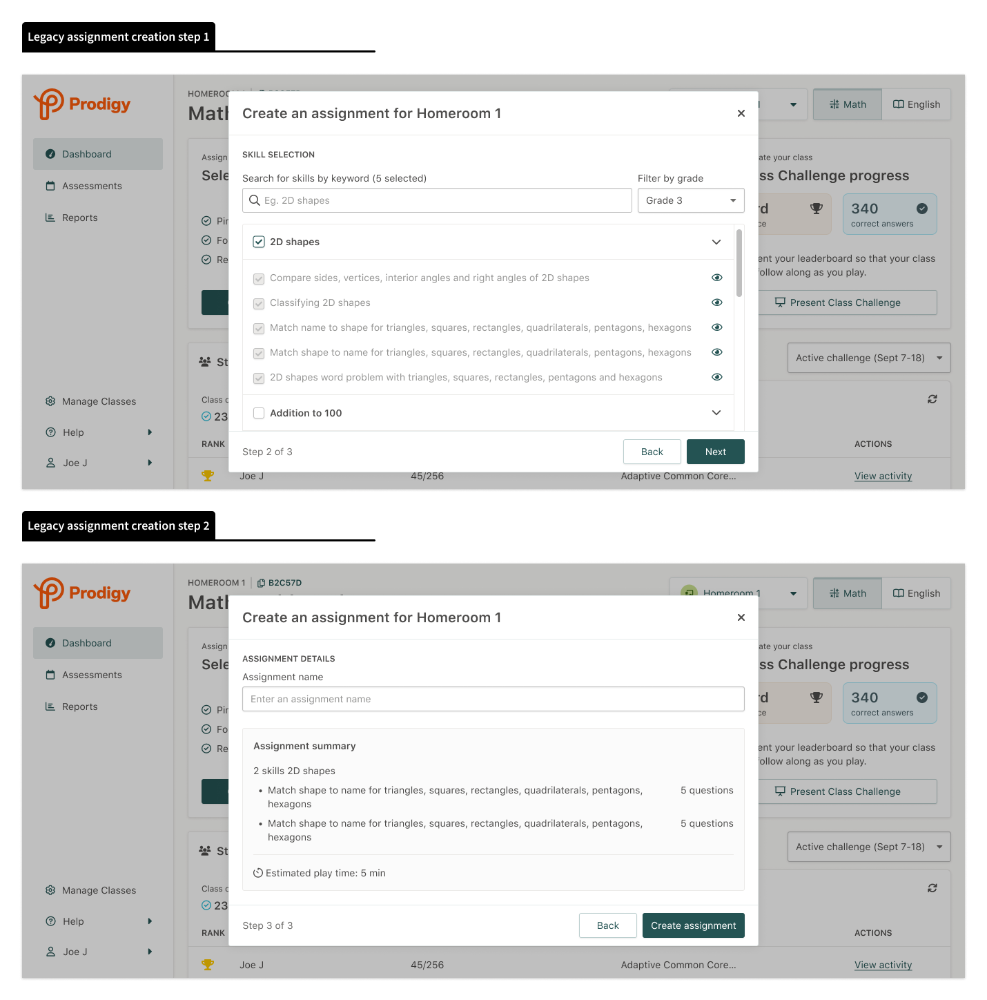
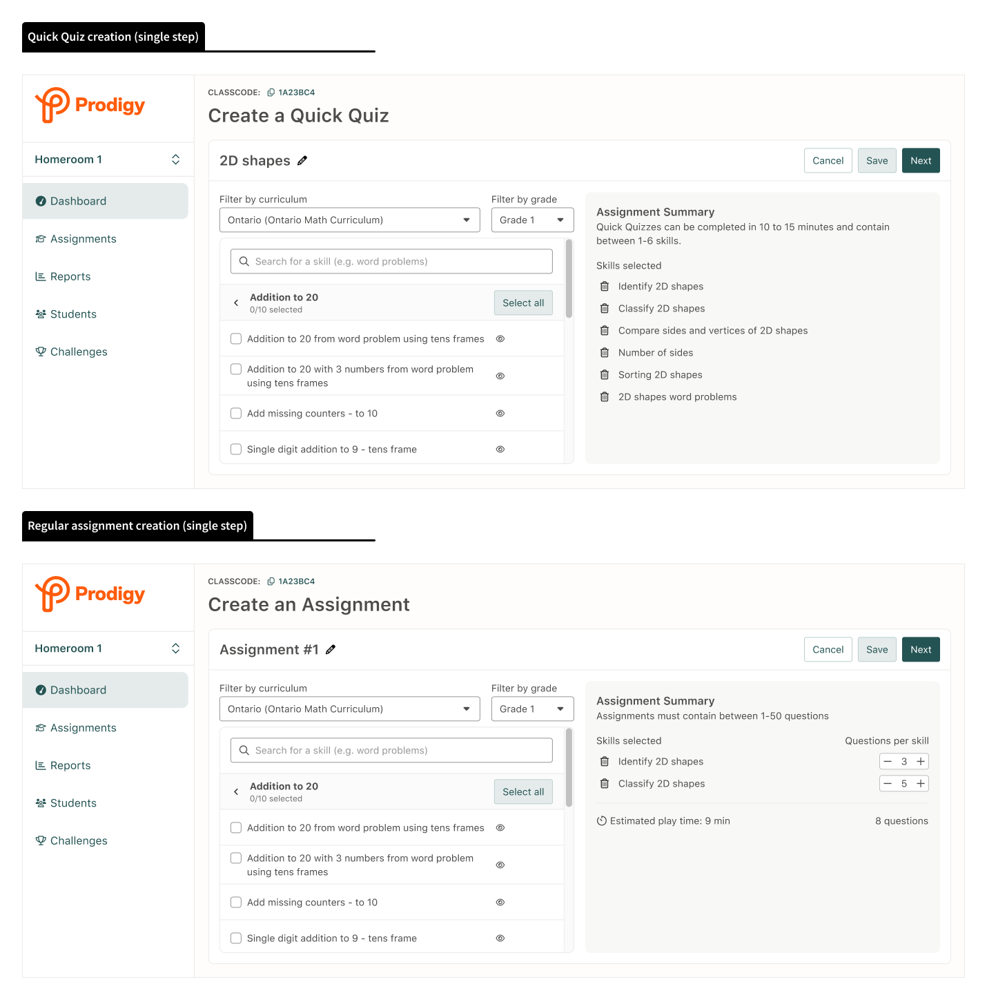

End-to-end design of a whole-class game mode that increased Prodigy usage in classrooms, drove a +6% lift in teacher activation, and repositioned Prodigy from a "free time" game to an in-class review tool.

Click to expand
For years, Prodigy was synonymous with “free time,” used during free choice periods or after students finished other work. But post-COVID, classrooms changed. Behavioral challenges increased, learning gaps widened, and in-class time became more tightly structured, leaving little room for tools like Prodigy.
At the same time, competitors built for structured, whole-class engagement were gaining traction, while Prodigy’s teacher activation was declining. To stay relevant in the classroom, we needed to evolve.
Post-COVID classrooms had less unstructured time than ever before.
Teacher activation was trending downwards, dropping by -17% YOY in Q2 of 2024.
Prodigy's game codebase was over a decade old.
New features had to work within significant technical constraints and existing data pipelines.
The Game Team and "Grown-ups" Team rarely shipped features together.
Competing priorities and processes made clear communication vital.
To regain footing in the classroom, Prodigy needed to support new use cases. Market research from an external firm identified whole-class review as the biggest opportunity. More specifically, it pointed to entrance and exit tickets, short quizzes used at the start or end of a lesson to quickly assess student understanding.
At the time, Prodigy was not built to support this kind of whole-class engagement. This left us with a key question…
Transform Prodigy from an independent reward activity into a synchronous, teacher-led assessment tool, using our existing game infrastructure?
Before jumping into design, I needed to understand the new market we were entering. At the same time, with a Q4 start, we were under pressure to ship before teachers returned from winter break. Missing that peek window for feature adoption meant waiting until Fall 2025 to meaningfully address declining activation.
So I took a scrappy approach: a focused competitor analysis, interviews with Education Specialists and former teachers on our team, and synthesis of existing post-COVID research. The goal was to gather enough of a signal to move fast with confidence.
Successful existing products had an almost identical set of key features — content selection, live student lobby, sharable live reporting, and a final teacher report.
Balancing engagement is key — teachers reported that overly stimulating gameplay becomes disruptive in classrooms, while low engagement leads to boredom.
Content needs to be specific — teachers wanted to measure understanding of specific skills taught in a single lesson and needed granular control over what students would see.
Live feedback is critical — teachers need real-time insight into student progress to intervene effectively in class.
We knew students loved playing Prodigy, but its open-ended gameplay led to unpredictable time on task answering math questions. Teachers also lacked visibility into student progress and control over the adaptive content, making whole-class use impractical.
Based on these insights, I formed a hypothesis to guide our design direction:
"If we give teachers granular control over content and time on task and provide real-time student feedback, then we can support the whole-class engagement use case."
Using the gathered insights as a starting point, I partnered with our Education Specialists to workshop and validate early concepts for the teacher experience. At the same time, the game team built a focused mode that removed in-game distractions and significantly increased time on task. Our teams aligned weekly to ensure both sides fit together and stayed on track.
Early ideas explored the possibility of generating premade Quick Quizes for users, either using our algorithm or AI, then allowing users to customize individual questions within the quiz. Teachers could add, remove, or replace questions quickly from the editing experience.
From my research, I knew teachers wanted more granular control over the content students encountered. These changes were descoped due to technical constraints, but the improvements we made to the assignment flow through the launch of Quick Quiz laid the groundwork for us to come back to this at a later date.



Quick Quiz required close collaboration between two teams that rarely worked together: the Game Team (focused on student experience) and the Grown-ups Team (focused on teacher tools). Different codebases. Different priorities. Different ways of working.
My role became as much about helping the team to navigate tradeoffs and prioritize requirements, as it was about design. In practice, this looked like...
Rather than building a new system from scratch, I worked with engineering to repurpose existing assignment override logic. This allowed us to "force" students into Quick Quiz mode without creating new infrastructure. Keeping the behaviour consistent between the two assignment types also made maintenance easier, as we didn't have to support two separate systems.
Teachers needed real-time visibility into whether students were actually ready to play. Because this synchronous model was new, we didn’t have a framework in place that communicated student state to the teacher app. I partnered with engineering to utilize existing student user tags to surface meaningful participation signals through our established data pipelines.
Many younger students didn’t have accounts or couldn’t remember their login details, which meant completing Prodigy’s 10+ minute onboarding before joining Quick Quiz. To prevent this from blocking participation, I worked with the Game team to negotiate a condensed onboarding focused solely on core mechanics. Students could jump into the quiz immediately and were returned to the full onboarding flow afterward.
Quick Quiz needed to survive the chaos of real +20 student classrooms with issues like varying internet connections, different reading levels, mixed comfort levels with technology, and behavioral challenges. Because of this, I knew we needed to see it live in action.
Through a teacher friend of mine I was able to organized scrappy in-class tests with local teachers and their students.
Being able to see real teachers and students using the feature was invaluable. It gave us the confidence to move forward with the feature and helped us to identify urgent issues and potential improvements. The research plan for this study is available here, along with the test plan, test script, task list, and note taker document.

The work required to build Quick Quiz exposed inefficiencies and poor user experiences in our assignment creation flow and assignment reports. I leveraged the momentum to drive changes that benefited the entire product.
By approaching the Quick Quiz project holistically, I was able to design a feature that met user and business needs while making much needed improvements to core sections of the existing assignment experience.


Quick Quiz delivered results across key metrics, driving a +6% increase in teacher activations, which had been consistantly declining for more than a year. This validated the hypothesis that providing teachers with a focused quiz experience could increase Prodigy usage in classrooms.
Teacher activation in the first month
Increase in assignment creation
Increase in assignment completion
Lift in student play time
Beyond metrics, Quick Quiz shifted how the market perceived Prodigy. We were no longer competing only for "free time", we were now a legitimate option for structured classroom use.
Quick Quiz was one of the more complex projects I've led, not because of the design itself, but because of the organizational, technical, and strategic challenges it presented.